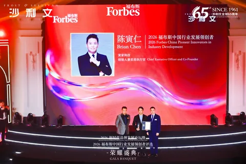
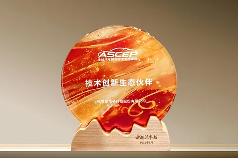
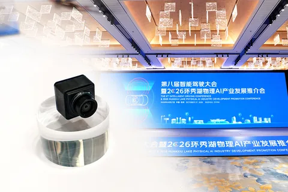

042026
寅家科技斩获奇瑞商用车项目定点，以智能感知技术，赋能商用车发展
2026年第一季度，寅家科技凭借其自主研发的智能视觉感知技术方案，成功斩获奇瑞商用车项目定点，将为奇瑞商用车全新车型
News Center
2026年第一季度，寅家科技凭借其自主研发的智能视觉感知技术方案，成功斩获奇瑞商用车项目定点，将为奇瑞商用车全新车型

3月18日，寅家科技创始人兼CEO陈寅仁（Brian Chen）先生被授予“2026福布斯中国行业发展领创者”称号。

2026年3月13日，由中国能源汽车传播集团指导、《中国汽车报》社主办的2026汽车供应链生态伙伴大会在北京首都国际
百舸争流，时代淘沙 寅家科技的发展史， 是中国本土汽车科技企业 技术自主化、业务全球化的一个缩影。 作为首席架构师，
春华启幕，征程再启 寅家科技以智能科技，驱动新一年的效率革新 我们跨越“地面+低空+作业”三大战略版图 为每一位开工

此前，教育部科学研究优秀成果奖（自然科学和工程技术）获奖名单正式公布。寅家科技凭借“复杂环境下融合视觉的移动机器人导